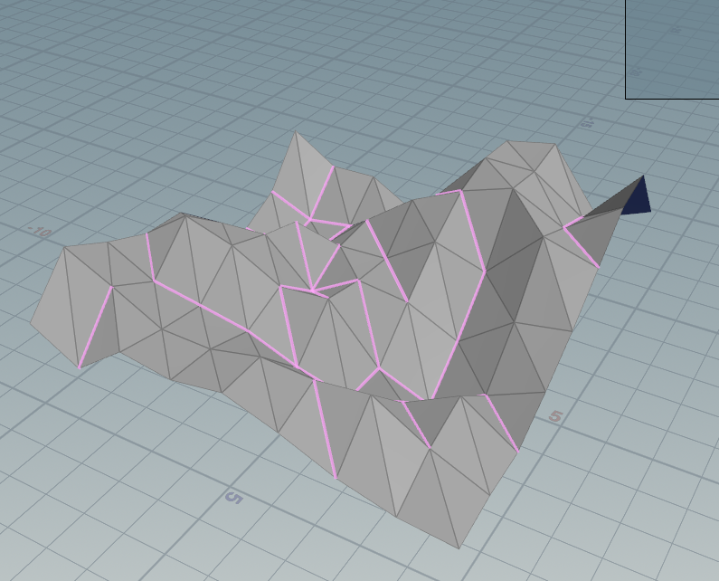
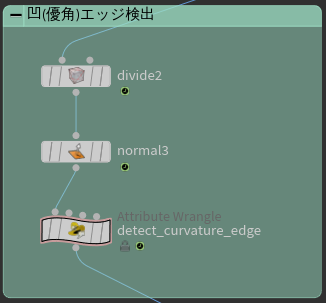

VEXで谷折りエッジを検出しグループ化する
やりたいこと
谷折り部分のエッジだけを検出したいが、Group CreateのInclude by Edgesでは山折り谷折り関係なしに検出してしまうし、低ポリゴンだとMeasureノードのCurvatureモードが上手く働かないのでVEXを使用して谷折りエッジのみを検出する仕組みを作成した。

45度以上の谷折りエッジを選択
優角、劣角
優角は180°以上、360°以下の角のことで、劣角は0°以上180°以下の角のことをいう。 優角にはreflex angleという英語訳があるが、劣角には対訳がない。
判定方法
面法線とTangentを使用して判定する。 重要なのはTangentの向きを揃えること。そこで共有する辺のベクトルをBinormalとして、Tangentを求める。
Houdiniは右手座標系なので、辺は時計回りで順番になる。特定の辺に向かうTangentベクトルを求めるには、Normal×Binormalの順番で外積すれば良い。
プライマリプリミティブのNormalとセカンダリプリミティブのTangentを内積すると、0以上の場合優角、0以下の場合劣角となる。
基本方針
- プリミティブからプリミティブを構成するハーフエッジのリストを取得する
- ハーフエッジから同等のハーフエッジを検索し、それを含むプリミティブを見つける
- プリミティブ同士のNormalとTangentを内積する。
- 一定角以上の辺をグループ化する。
ノード構成
3角形ポリゴンかつ、フラットシェーディングであることが前提。Threshold(0-1)で設定した角度以下の谷折りエッジを、Nameで指定した名前をEdgeグループ化する。

1 2 3 4 5 6 7 8 9 10 11 12 13 14 15 16 17 18 19 20 21 22 23 24 25 26 27 28 29 30 31 32 33 34 35 36 37 38 39 40 41 42 43 44 45 46 47 48 49 50 51 52 53 54 55 56 57 58 59 60 61 62 | // プリミティブに含まれる最初のハーフエッジを見つける int f_hedge = primhedge(0, @primnum); vector N = normalize(vertex(0, "N", vertexindex(0,@primnum,0)) + vertex(0, "N", vertexindex(0,@primnum,0)) + vertex(0, "N", vertexindex(0,@primnum,0))); int hedge = f_hedge; int i = 0; while(hedge != -1 && i < 3) { if(i != 0 && hedge == f_hedge) { break; } // ハーフエッジかどうか if(hedge_isvalid(0, hedge) == 0) { hedge = hedge_next(0,hedge); ++i; continue; } // プライマリハーフエッジかどうか if(hedge_isprimary(0, hedge) == 0) { hedge = hedge_next(0,hedge); ++i; continue; } int hedgeNum = hedge_equivcount(0, hedge); int other_hedge = hedge_nextequiv(0,hedge); // プライマリハーフエッジに対して同等なもう一方のハーフエッジを取得する for(int k = 0; k < hedgeNum-1; ++k) { // 共有する辺からBinormalを計算する vector binormal = normalize(point(0,"P", hedge_srcpoint(0,other_hedge)) - point(0,"P", hedge_dstpoint(0,other_hedge))); // もう一方の面の法線を求める。 int other_prim = hedge_prim(0, other_hedge); int other_vertex = vertexindex(0,other_prim,0); int other_vertex2 = vertexindex(0,other_prim,1); int other_vertex3 = vertexindex(0,other_prim,2); vector otherN = normalize(vertex(0, "N", other_vertex) + vertex(0, "N", other_vertex2) + vertex(0, "N", other_vertex3)); // normal x binromal の順番で外積 vector otherT = cross(otherN, binormal); // プライマリのNormalとセカンダリのTangentを内積 float angle = dot(N, otherT); if(angle > ch("threshold")) { setedgegroup(0, chs("name"), hedge_srcpoint(0,hedge), hedge_dstpoint(0,hedge),1); } other_hedge = hedge_nextequiv(0, other_hedge); } hedge = hedge_next(0,hedge); ++i; } |
サンプル
Houdini Indie Limited-Commercial 18.9.287で作成
detectCurvatureEdge.hiplc